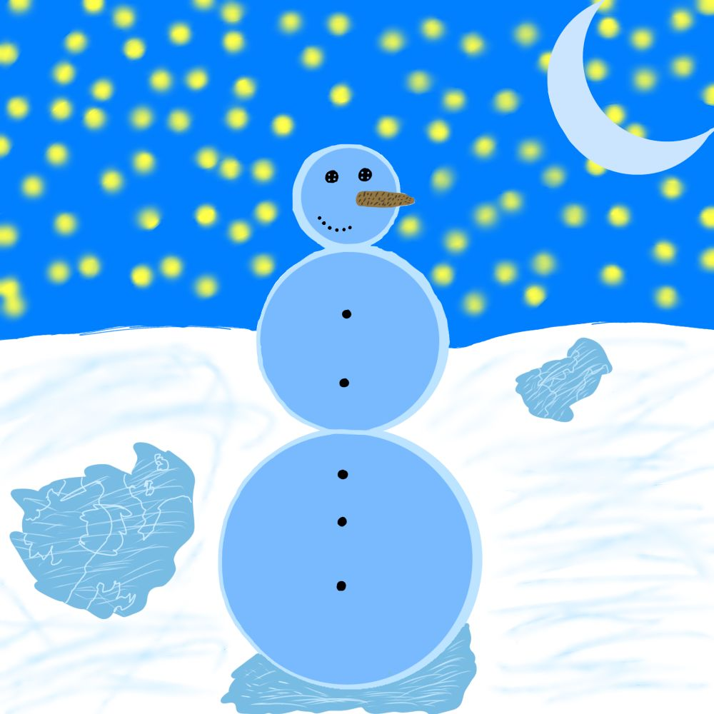
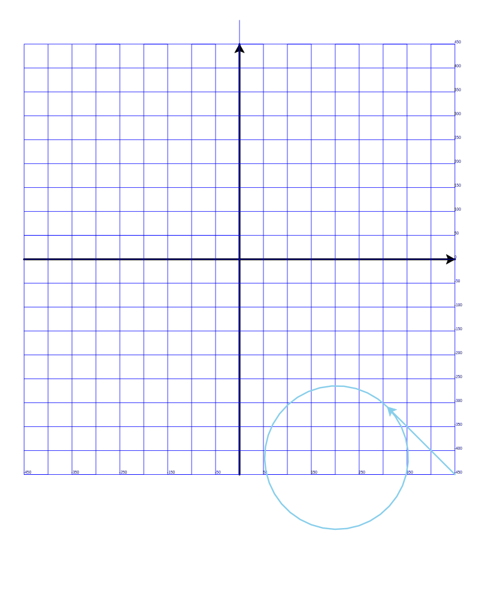

Сегодня продолжили изучать программирование на Python и создание рисунков при помощи черепашки Turtle.
Наша задача - нарисовать снеговика, как на этом рисунке:
Чтобы это было проще сделать, сначала нарисуем сетку координат. Нам помогут следующие команды:
| Команда | Что делает |
|---|---|
from turtle import * |
Подключаем всю магию Черепашки, чтобы начать рисовать! 🐢✨ |
shape("turtle") |
Меняет курсор на черепашку. 🐢 |
speed(0) |
Делает черепашку супербыстрой! 🚀 (от 1 до 10, но 0 — это самая высокая скорость). |
shapesize(2, 2, 1) |
Увеличивает черепашку, чтобы её было лучше видно. |
width(4) |
Устанавливает толщину линий, которые рисует черепашка. |
forward(450) |
Двигает черепашку вперёд на 450 единиц. 🏃♂️ |
stamp() |
Оставляет отпечаток черепашки на экране. 🐢🔖 |
backward(900) |
Двигает черепашку назад на 900 единиц. 🚶♂️⬅️ |
left(90) |
Поворачивает черепашку влево на 90 градусов. ↩️ |
right(90) |
Поворачивает черепашку вправо на 90 градусов. ↪️ |
color("blue") |
Меняет цвет пера черепашки на синий. 🔵 |
setheading(0) |
Направляет черепашку в определённую сторону (0 = в правую сторону экрана, 90 = вверх, и т.д.). |
write(i * 50 - 450) |
Так пишем числа на сетке, чтобы было удобнее считать. ✍️ |
circle(150) |
Рисует круг с радиусом 150. 🟢 |
getcanvas().postscript(...) |
Сохраняет наш рисунок в файл, чтобы он не потерялся! 📂 |
done() |
Сообщает черепашке, что работа окончена. 🎉 |
Вот что у нас получилось в этот раз:
Очень хорошо!
На следующих уроках продолжим работу!